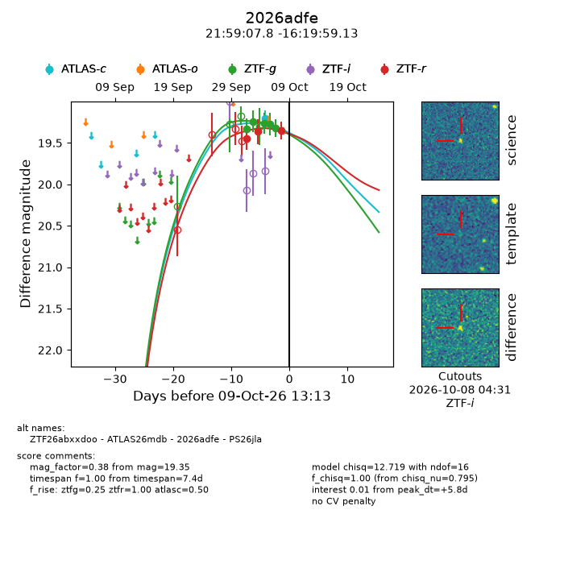
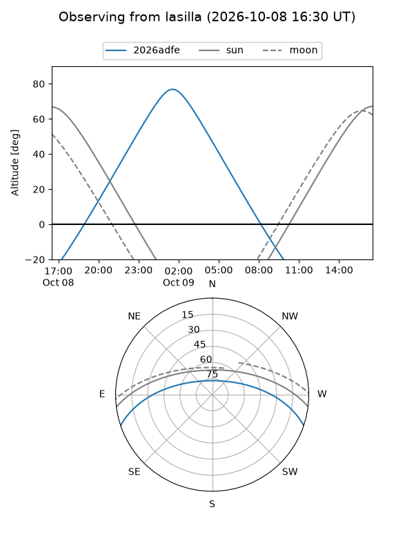
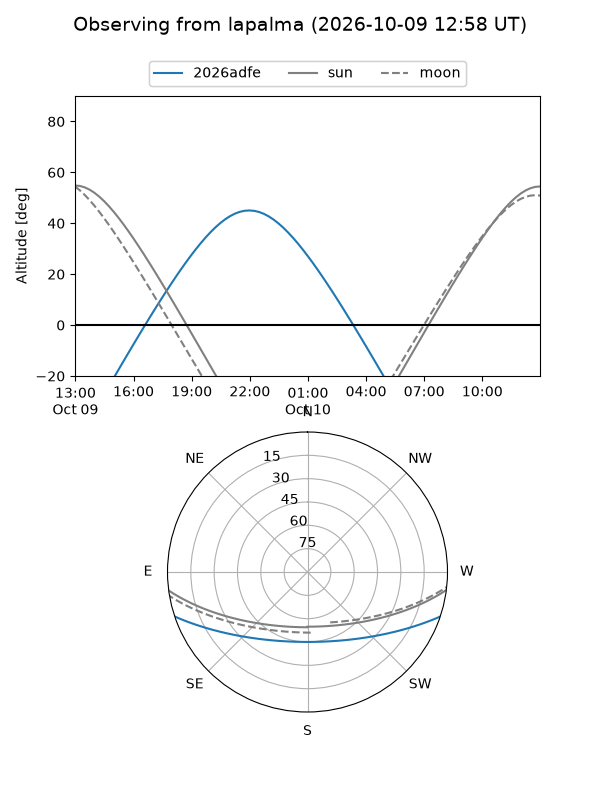
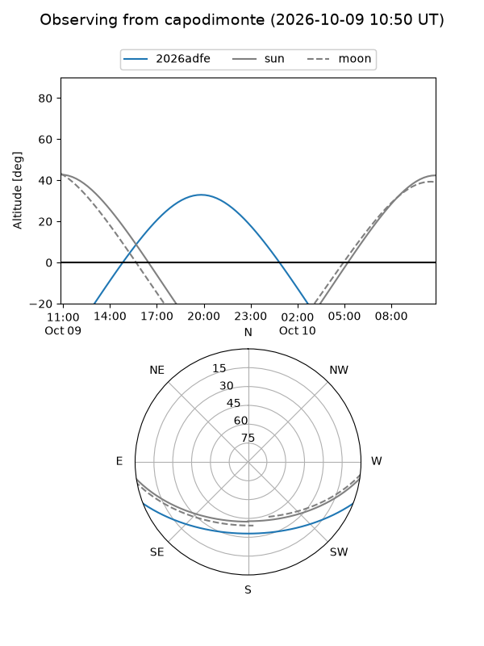
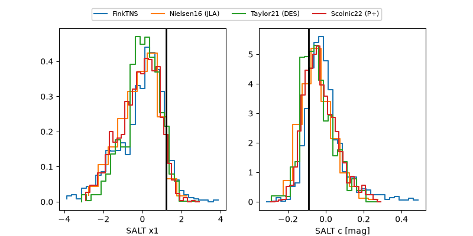

2026adfe
Target 2026adfe at 2026-10-09 13:16
Aliases and brokers:
FINK-ZTF: ztf.fink-portal.org/ZTF26abxxdoo
Lasair-ZTF: lasair-ztf.lsst.ac.uk/objects/ZTF26abxxdoo
ALeRCE-ZTF: alerce.online/object/ZTF26abxxdoo
YSE-PZ: ziggy.ucolick.org/yse/transient_detail/2026adfe
TNS name: wis-tns.org/object/2026adfe
Direct TNS query: direct search
alt names
ZTF26abxxdoo (ztf,fink_ztf)
2026adfe (tns,yse)
ATLAS26mdb (atlas)
PS26jla (panstarrs)
Coordinates:
equatorial (ra, dec) = 329.7826,-16.33309
equatorial (HMS+DMS) = 21:59:07.82,-16:19:59.13
galactic (l, b) = (38.9713,-48.77068)
Flags:
peak dt: +5.8
Photometry:
last atlasc=19.20, ztfg=19.32, ztfr=19.35
1 atlasc, 5 ztfg, 3 ztfr detections
Lightcurve

Visibility



Additional plots
